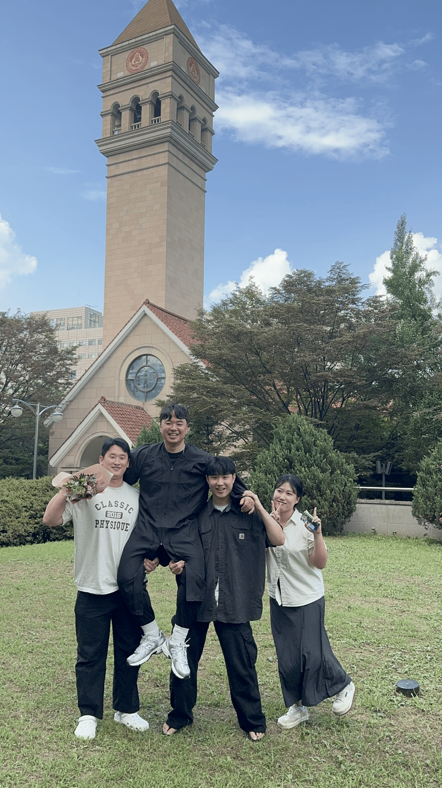
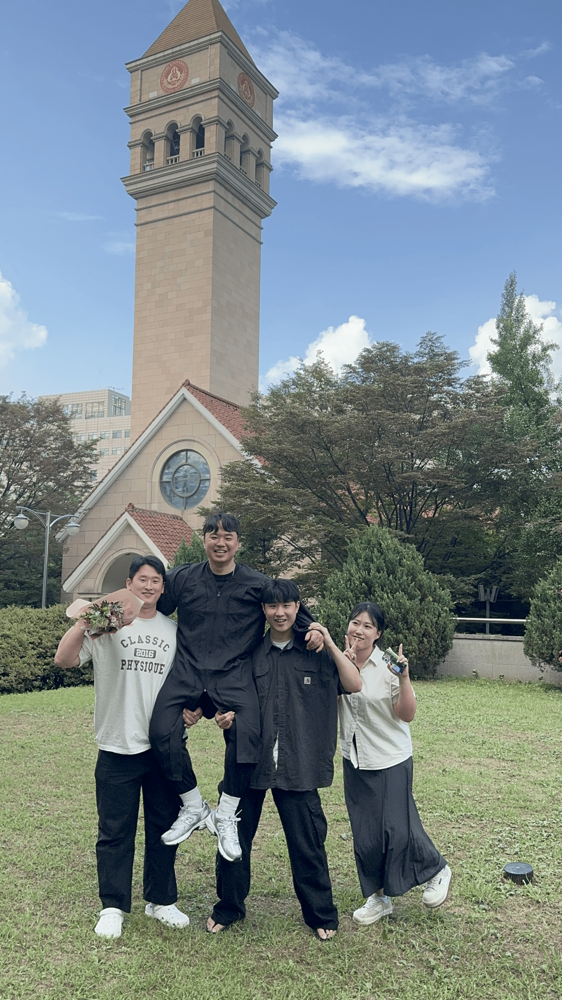
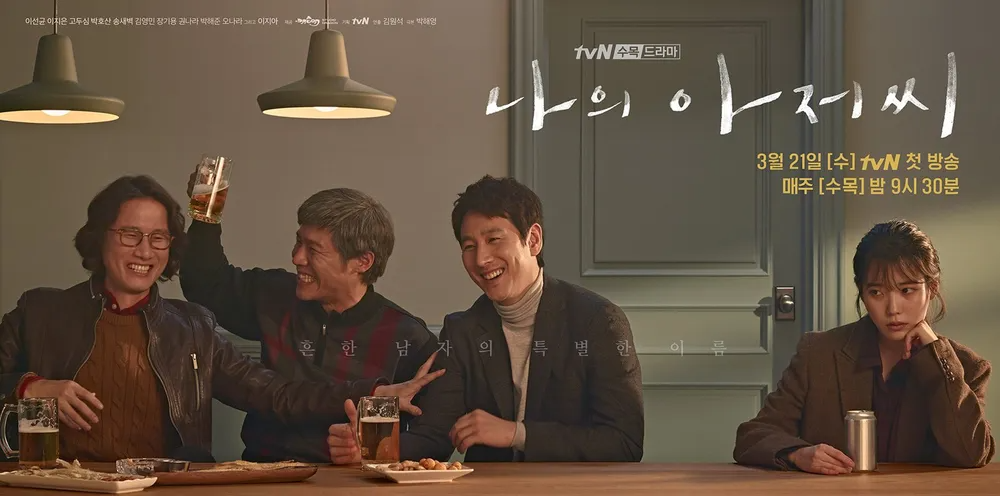

인생 드라마

우테코 입교 전에 시청했던 드라마이자, 저의 마지막 드라마입니다. 처음엔 밑도끝도 없이 우울한 드라마라고 생각하여 기피했지만, 친구들의 강압적인 태도로 인해 보기 시작했습니다. 개인적으로 마음이 뒤숭숭한 시점에 이 드라마를 시청하니 가슴이 많이 뭉클해졌던 것 같습니다. 어떠한 미디어를 시청하든 눈물을 흘리지 않는 저인데도 불구하고, 눈물 직전까지 갔던 것 같습니다. 꼭 한 번 시청해보시길 바랍니다.